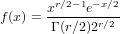
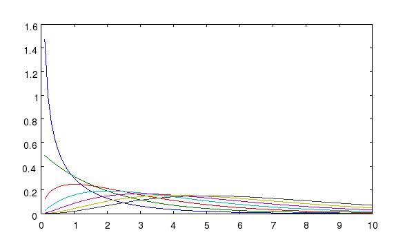

RANDCHI Generate Chi-Square Random Variable
Section: Random Number Generation
Usage
Generates a vector of chi-square random variables with the
given number of degrees of freedom. The general syntax for
its use is
y = randchi(n)
where n is an array containing the degrees of freedom for
each generated random variable.
Function Internals
A chi-square random variable is essentially distributed as
the squared Euclidean norm of a vector of standard Gaussian random
variables. The number of degrees of freedom is generally the
number of elements in the vector. In general, the PDF of
a chi-square random variable is

Example
First, a plot of the PDF for a family of chi-square random variables
@>
The PDF is below:

Here is an example of using randchi and randn to compute
some chi-square random variables with four degrees of freedom.
@>